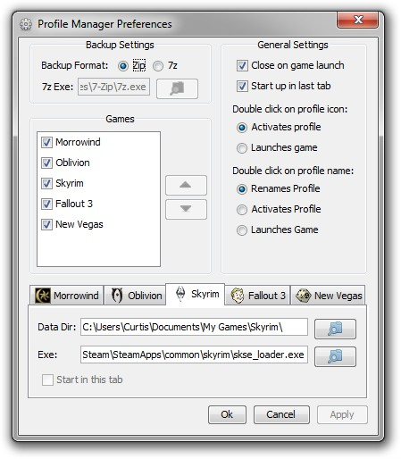

) next
to each of the above text fields will open a window where you can choose the file or folder
for each of the text fields.
) next
to each of the above text fields will open a window where you can choose the file or folder
for each of the text fields.

Here you can specify what file format to use when making backups of the saved games. If you wish to use 7zip you will need to have seven zip installed and correctly set the location of the 7zip executable.
Here you can change which games that the Profile Manager will manage and what order they will appear in.
To remove or add a game, either click on the checkbox next to the game's name or double click on the game. Games with the checkbox checked will show up in the Profile Manager.
To change the order that the games will appear in the Profile Manager, select a game by clicking on its name and then using the up or down arrows to change it's position.
Here you can change various settings for the Profile Manager.
Close on game launch, when this setting is checked the Profile Manager will exit after starting a game, otherwise it will remain open after starting a game.
Start up in last tab, when this setting is checked the Profile Manager will start up in the same tab as it was closed in. If this setting is enabled you will be unable to use the "Start in this tab" setting.
Here you can change the settings for the each of the games. When first running the program it is a good idea to make sure that all the game settings are pointing to the correct folders and files.
Data Directory, this tells the Profile Manager what folder contains the saved games folder and the games ini files.
Exe, this tells the Profile Manager what executable file (program) to start when the launch game button is hit.
Clicking on the folder icon () next
to each of the above text fields will open a window where you can choose the file or folder
for each of the text fields.
Start in this tab, when this check box is checked the Profile Manager will always start-up in that game's tab. This check box can only be selected when the "Start up in last tab" check box is not checked.